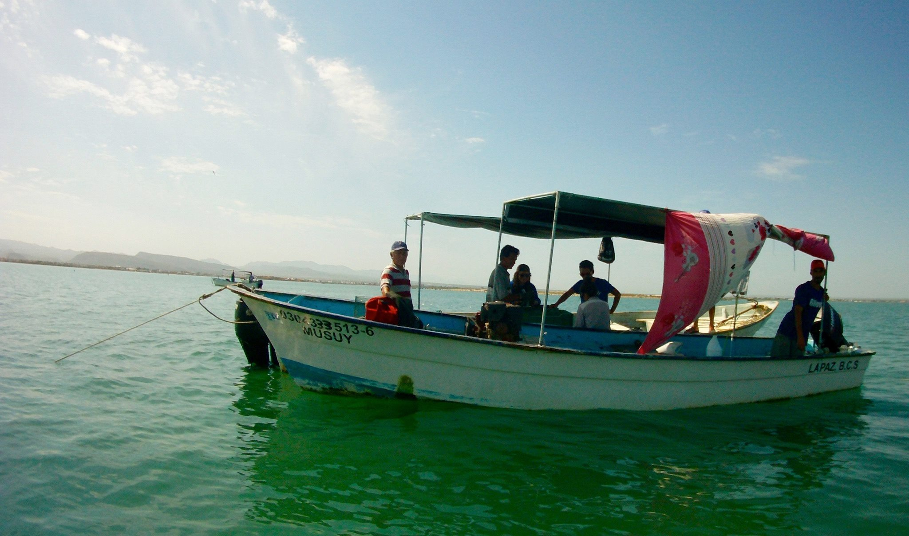

Research

Quick Intro
I graduated with a Bachelor of Science in Biology in 2012 from the Universidad Autónoma Metropolitana in Mexico City. During my time as an undergrad I did research aiming to improve food security in coastal communities in Mexico. After my undergrad, I worked at the Global Institute for Sustainability and managed my own diving center in Mexico City. In 2014 I was honored with a Latin American Fisheries Fellowship by the Walton Foundation to study a Masters in Environmental Science & Management from the Bren School of Environmental Science and Management at the University of California, Santa Barbara. My group dissertation worked along with the Bureau of Energy and Management of the United States and focused on the development of a citizen science monitoring protocol for the rocky intertidal of the West Coast of the US. Currently, I’m doing a Ph.D. at the University of British Columbia in Vancouver, Canada. Under the guidance of Dr. William Cheung, my work looks at the socio-ecological implications of climate change on fish that move freely between the national waters (transboundary) of Canada, the United States and Mexico.
If you are interested, you can download my CV at the bottom of this page. Feel free to contact me to discuss any of my past or current projects and please keep in mind that the most recent ones might not be there. On my GitHub profile you will find some of my scripts revealing my computer programming skills.
Current Research Projects

Publications in Scientific Journals
2020
- Andrews, E. J., Harper, S., Cashion, T., Palacios-Abrantes, J., Blythe, J., Daly, J., Eger, S., Hoover, C., Talloni-Alvarez, N., Teh, L., Bennett, N., Epstein, G., Knott, C., Newell, S. L., and Whitney, C. K. Supporting early career researchers: insights from interdisciplinary marine scientists. ICES Journal of Marine Science, doi:10.1093/icesjms/fsz247.
2019
- Palacios-Abrantes, J., Cisneros-Montemayor, A. M., Cisneros-Mata, M. A., Rodriguez, L., Arreguín-Sánchez, F., Aguilar, V., Domínguez-Sánchez, S., Fulton, S., López-Sagástegui, R., Reyes-Bonilla, H., Rivera-Campos, R., Salas, S., Simoes, N., and Cheung, W. W. L., 2019. A metadata approach to evaluate the state of ocean knowledge: Strengths, limitations, and application to Mexico. PLoS ONE, 14 (6), DOI e0216723.
2018
- Palacios-Abrantes J., Herrera-Correal J., Rodríguez S., Brunkow J. & Molina R. (2018) Evaluating the bio-economic performance of a Callo de hacha (Atrina maura, Atrina tuberculosa & Pinna rugosa) fishery restoration plan in La Paz, Mexico. PLoS ONE 13(12): e0209431. DOI: 10.1371/journal.pone.0209431
- Malin L. Pinsky, Reygondeau G., Caddell R., Palacios-Abrantes J., Spijkers J. & Cheung W.L. (2018) Preparing ocean governance for species on the move. Science, Vol. 360, Issue 6394, pp. 1189-1191, DOI: 10.1126/science.aat2360
2017
- Palacios-Abrantes J., Melo-Ruiz V., Urbano B., Falcón-Gerónimo J. & Gazga-Urioste C. (2017) Nutritional Analysis of Octopus hubbsorum B (Cephalopoda: Octopodidae) from the Pacific Ocean, Acapulco, Guerrero, México. Journal of Applied Life Sciences International, 10(3), 1–6.
2016
- Palacios-Abrantes J., Melo-Ruiz V., Diaz-Garcia R., Gazga-Urioste C. & Urbano B. (2016) Iron Profile of Octopus hubbsorum (Cephalopoda: Octopodidae) for Enrichment of the Mexican Diet, 10, 1–4. doi.org/10.17265/1934-7375/2016.05.008
2013
Ruiz V. M., Aguirre H. D., Martínez B., Palacios-Abrantes J. & Vargas, N. (2013) Plaga de ortópteros, recurso de nuetrientes para la población. Entomologia Mexicana (2) 1077–1079.
Melo V., Jiménez H., Palacios-Abrantes J. & Barreda T. Q. (2013) Fruto de Capulín Prunus Serotina y larvas de Synopsia Mexicanaria W, representan una buena fuente de nutrientes en la dieta cotidiana. Entomologia Mexicana, 12 (2), 1084–1086.